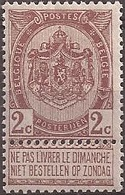
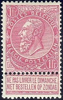
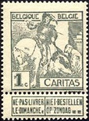
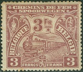
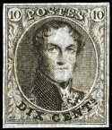
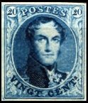
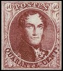
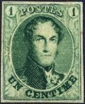
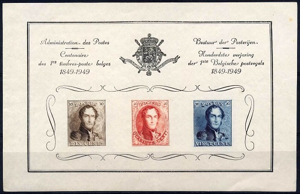

Kingdom of Belgium stamps were first issued in 1849. Belgium has the distinction of being the 9th country in the World to issue adhesive stamps for the prepayment of letter postage. Belgium, Gallia Belgica during the Roman Empire, has been around for over 2,000 years, but for much of that time, it was controlled by France and then by the Netherlands. The Belgians gained their independence from the Netherlands during the Belgian Revolution of 1830. The provisional government then invited Prince Leopold of Saxe-Coburg-Gotha, the Duke of Saxony (1790-1865) to become their first constitutional monarch. The prince was installed as Leopold I, King of the Belgians, in July 1831. With the selection of King Leopold I, the Belgian monarchy in the 19th Century became very closely intertwined with the monarchy of Great Britain. In 1816, still being a Prince of Saxe-Coburg-Gotha, Leopold married Princess Charlotte, the only child of King George IV (1762-1830) of Great Britain. Charlotte died the day after giving birth to a stillborn child in 1817. Had she lived, she would have become Queen Charlotte I of Great Britain upon the death of her father in 1830, and Prince Leopold would have become the Prince Consort of Great Britain! King Leopold's sister, Princess Victoria of Saxe-Coburg-Saalfeld (1786-1861), was married to Prince Edward, the Duke of Kent (1767-1820), who was one of the three children of King George III (1738-1820) of Great Britain. They had a daughter, Princess Alexandrina Victoria (1819-1901), who WOULD BECOME the Queen of Great Britain in 1837. King Leopold's youngest nephew on his brother's side, was Prince Albert of Saxe-Coburg-Gotha (1819-1861). In 1840, Prince Albert married Leopold's niece, and his first cousin, Queen Victoria. Thus by 1840, King Leopold I of Belgium was the brother of the Duke of Saxe-Coburg-Gotha, the uncle of the Queen of Great Britain, and the uncle of the Prince Consort of Great Britain. Leopold's family connections would enable the young Kingdom of Belgium to have a lot of leverage with its less-than-friendly European neighbors!Belgium stamps from 1849 through 1891 were inscribed in French, the official government language. Since 1893, all the stamps of Belgium have been inscribed in both French and Dutch, the two official languages of the country. Dutch is spoken in the Northern Flemish Region of the country, whereas French is spoken in Brussels and in the Southern Walloon Region of the country.  Like most other countries, most of the Belgium stamps of the 19th Century and early 20th Century are regular definitive postage stamps. If collected in used condition, most of them are not terribly expensive, and they can form a very attractive looking classical collection. One interesting feature of the Belgium stamps issued between 1893 and 1914, is the addition of a perforated tab at the bottom of each of the postage stamps. The tab reads "NE PAS LIVRER LE DIMANCHE" in French, with the same phrase repeated in Dutch. This means "DO NOT DELIVER ON SUNDAY". The sender would leave the tab attached to the stamp, if they objected to their letter being delivered on Sunday. If the sender did not object to Sunday delivery, they could indicate their preference by removing the tab from the stamp. With the exception of some special issues for national exhibitions and of various high-denomination pictorial definitive stamps, commemorative Belgian stamps were not issued with any regularity until the 1930's.  Belgian stamps issued for charitable purposes (semi-postal stamps) first appeared in 1910. The majority of the earlier issues were issued to raise money for the National Tuberculosis Foundation, the Red Cross, or to fund post-war reconstruction programs. Belgium is also famous, among stamp collectors, for its extensive series of Railroad Parcel Post Stamps. These were first issued in 1879, and they continue to this day. If collected in used condition, most of the stamps are not unreasonably expensive. As of 2005, almost 500 of these stamps have been issued. These could be a specialty in themselves, and they form the basis for many Trains on Stamps thematic collections, as well. Historical articles and reviews of the postage stamp issues of Belgium will appear in the link section at the top of the third column of this page.
Belgium stamps were first issued in 1849, with Belgium having the distinction of being only the 9th country in the World to issue adhesive stamps for the prepayment of letter postage. All of the postage stamps from 1849 to 1865 feature the facing portrait of King Leopold I. The two stamps shown above were officially issued on July 1, 1849. These stamps are known as the Epaulettes Issue. The first Belgium stamps, like the Penny Blacks of Great Britain, bore no country name. The rationale is that these stamps, when they were issued, were only intended for postal use within Belgium. These stamps were engraved, imperforate, and they were printed on paper with a framed monogram watermark. 10 C. (1849 - Scott #1) - Brown, Red Brown, Bister Brown, Dark Brown. 20 C. (1849 - Scott #2) - Blue, Milky Blue, Greenish Blue.   New designs, as shown above, were issued to replace the Epaulettes Issue of 1849. These stamps are known as the Medallion Issue. The 40 C. denomination was issued in late 1849, for the payment of postage on international mail. The 10 C. and 20 C. denominations were added during 1850, to replace the same denominations of the Epaulettes Issues. The 1 C. denomination was added in 1861. It was only valid for postage on newspapers and circulars. Between 1849 and 1865, there were many different printings of the Medallion Issue Belgium stamps shown in the images above. They are described below. The stamps printed in 1849 and 1850 were engraved, imperforate, and they were printed on both thin and thick papers with a framed monogram watermark. 10 C. (1850 - Thin Paper - Scott #3) - Brown. 20 C. (1850 - Thin Paper - Scott #4) - Blue. 40 C. (1849 - Thin Paper - Scott #5) - Carmine Rose. 10 C. (1850 - Thick Paper - Scott #3a) - Brown. 20 C. (1850 - Thick Paper - Scott #4a) - Blue. 40 C. (1849 - Thick Paper - Scott #5a) - Carmine Rose. The stamps printed between 1851 and 1854 were engraved, imperforate, and they were printed on thin to thick wove paper or ribbed paper with an unframed monogram watermark. 10 C. (1851 - Thick Paper - Scott #6) - Brown. 20 C. (1851 - Thick Paper - Scott #7) - Blue. 40 C. (1851 - Thick Paper - Scott #8) - Carmine Rose. 10 C. (1854 - Ribbed Paper - Scott #6a) - Brown. 20 C. (1854 - Ribbed Paper - Scott #7a) - Blue. 40 C. (1854 - Ribbed Paper - Scott #8a) - Carmine Rose. 10 C. (1851 - Thin Paper - Scott #3b) - Brown. 20 C. (1851 - Thin Paper - Scott #4b) - Blue. 40 C. (1851 - Thin Paper - Scott #5b) - Carmine Rose. The stamps printed in 1858 were engraved, imperforate, and they were printed on unwatermarked paper. The designs are 21 mm high. 10 C. (1858 - Scott #10b) - Brown. 20 C. (1858 - Scott #11b) - Blue. 40 C. (1858 - Scott #12b) - Vermilion. The stamps printed in 1861 were engraved, imperforate, and they were printed on unwatermarked paper. The designs are 22 mm high. 1 C. (1861 - Scott #9) - Green, Pale Green, Dark Green, Bottle Green. 10 C. (1861 - Scott #10) - Brown, Dark Brown. 20 C. (1861 - Scott #11) - Blue, Dark Blue. 40 C. (1861 - Scott #12) - Vermilion, Carmine Rose. The stamps printed in early 1863 were engraved and perforated 12 1/2. 1 C. (1863 - Scott #13a) - Green. 10 C. (1863 - Scott #14b) - Brown. 20 C. (1863 - Scott #15b) - Blue. 40 C. (1863 - Scott #16c) - Carmine Rose. 40 C. (1863 - Scott #16d) - Vermilion. The stamps printed in late 1863 were engraved and perforated 12 1/2 x 13 1/2. 1 C. (1863 - Scott #13b) - Green. 1 C. (1863 - Scott #13c) - Emerald Green. 10 C. (1863 - Scott #14c) - Brown. 20 C. (1863 - Scott #15c) - Blue. 40 C. (1863 - Scott #16e) - Carmine Rose. 40 C. (1863 - Scott #16f) - Vermilion. The stamps printed in 1865 were engraved and perforated 14 1/2. 1 C. (1865 - Scott #13) - Green. 10 C. (1865 - Scott #14) - Brown, Reddish Brown. 20 C. (1865 - Scott #15) - Blue, Turquoise Blue. 40 C. (1865 - Scott #16) - Carmine Rose. 40 C. (1863 - Scott #16f) - Carmine Rose, Bright Vermilion, Pomegranate Red. Reprints exist of most of the Belgium stamps of 1849-1865. When buying the expensive mint condition examples of these stamps, buying only those that have certificates of authenticity is strongly encouraged. The safe way to go? Collect used condition examples. They are a LOT cheaper too!  BEPITEC 1949 Souvenir Sheet The Souvenir Sheet shown above was printed in 1949 for the 100th Anniversary of Belgian postage stamps. It features reproductions of the three Belgium stamps issued in 1849. The stamps were not valid for postal use, and they have black burelage printed on the back of each of the stamps.